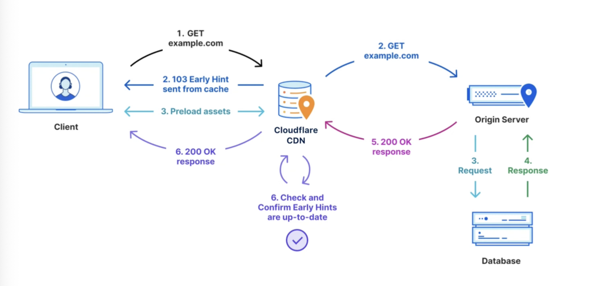
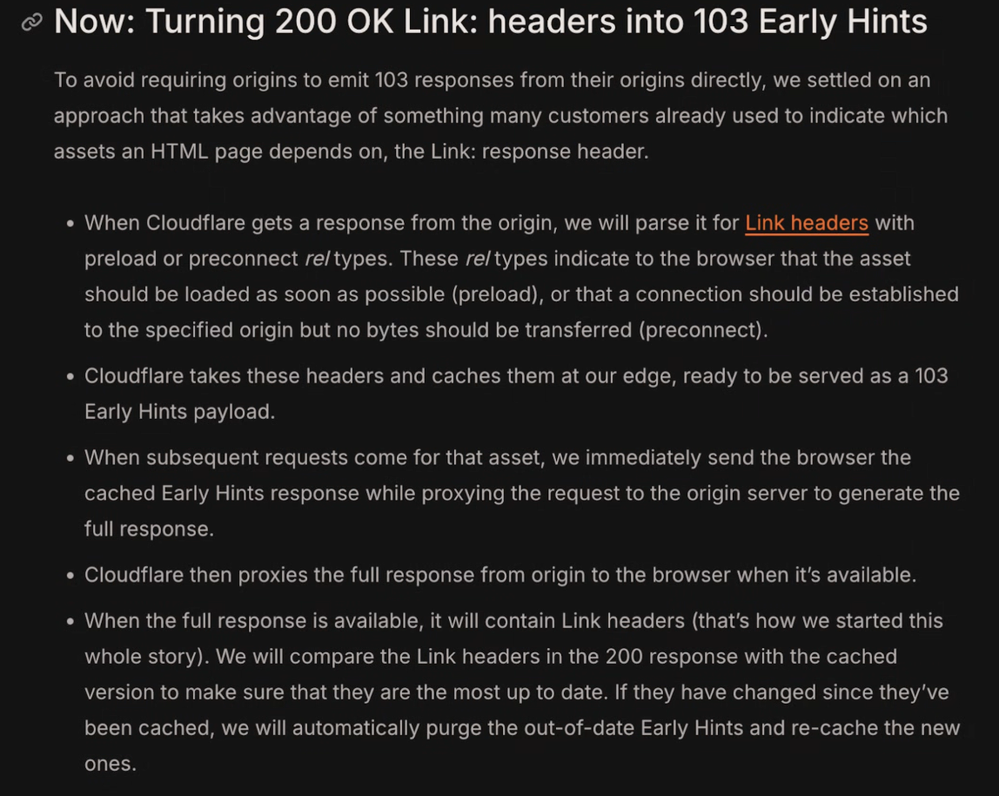
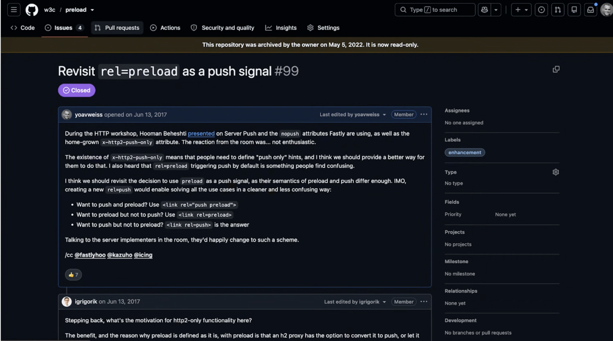
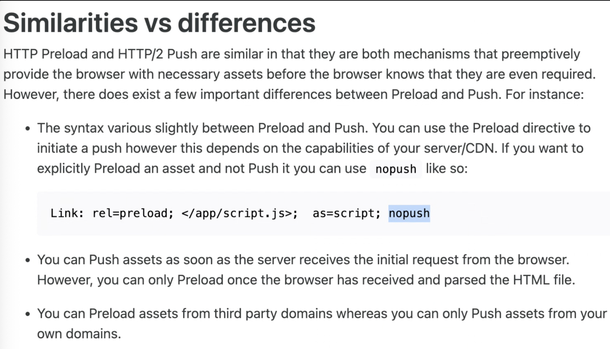
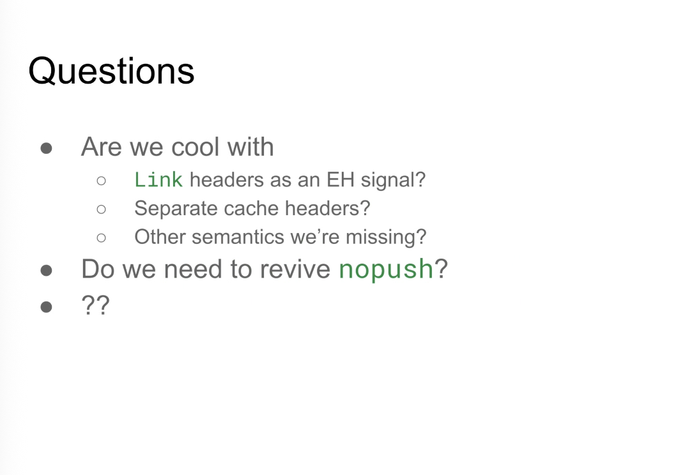

Participants
- Yoav Weiss, Nic Jansma, Guohui Deng, Carine Bournez, Patrick Meenan, Sergey Chernyshev, Matt Kubej, Barry Pollard, Philip Tellis, Katie Sylor-Miller, Scott Haseley, Michal Mocny
Admin
Minutes
- Yoav: Early Hints are used a lot, some merchant driven, some platform EH
- … Using Cloudflare’s CDN setup to do this

height: 784.00px; margin-left: 0.00px; margin-top: 0.00px; transform: rotate(0.00rad) translateZ(0px); -webkit-transform: rotate(0.00rad) translateZ(0px);" title="">- … We send hints for the Early Hints as part of the 200 response for HTML pages
- … We include link rel=preload and rel=preconnect
- … The Cloudflare CDN then uses that to seed the Early Hints for future requests for similar URLs
- … On the very first request to a URL we send a 200 response with EH, then CDN uses that as EH response for future requests before it gets it from Shopify
- … Future responses can overwrite that cached EH value in the CDN

height: 914.00px; margin-left: 0.00px; margin-top: 0.00px; transform: rotate(0.00rad) translateZ(0px); -webkit-transform: rotate(0.00rad) translateZ(0px);" title="">- … Using link headers
- … Digging through archive, this method goes back to H2 push

height: 908.00px; margin-left: 0.00px; margin-top: 0.00px; transform: rotate(0.00rad) translateZ(0px); -webkit-transform: rotate(0.00rad) translateZ(0px);" title="">- … link rel=preload used as signal for CDNs to similarly do Server Push
- … Even had a nopush attribute that defined as link headers

height: 934.00px; margin-left: 0.00px; margin-top: 0.00px; transform: rotate(0.00rad) translateZ(0px); -webkit-transform: rotate(0.00rad) translateZ(0px);" title="">- … Indicates to CDN that resource is a preload but it shouldn’t be pushed
- … EH less aggressive than H2 push, less bandwidth contention with HTML
- … Today we don’t have EH equivalent to nopush semantic
- … What about cache lifetimes?
- … Different than lifetime we want EH to be cached
- … Resource cache lifetime != hint cache lifetime
- … Motivation for better EH monitoring and how they’re being used, is at some point we realized due to a bug, EH were no longer firing on store front pages for preload (preconnect was used)
- … Digging into this, with help from Cloudflare, we realized there could be a collision / race condition there. EH in CDN were being overridden by some resources
- … We had request for HTML that included EH, but other request for same HTML URL with diff query params didn’t have same EH attached, so EH got flushed from CDN cache
- … Caused a lot of confusion and debugging to figure out
- … All became Cache lifetime issues
- … We have Cache-Control to manage for browser + CDN
- … CDN-Cache-Control that allows origin to say this resource is differently cacheable at CDN than browser
- … If we don’t want a resource cached in browser but can in CDN where it can be purged
- … Maybe there’s a need for a cache control for early hints
- … EH-CDN-Cache-Control to separate cache lifetime of resource vs. that of the hint

height: 744.00px; margin-left: 0.00px; margin-top: 0.00px; transform: rotate(0.00rad) translateZ(0px); -webkit-transform: rotate(0.00rad) translateZ(0px);" title="">- … Do we want Link headers as EH signal? I pushed against in the past for H2 Push case, but that ship has sailed. Should we document it?
- … Separate cache headers? Are there other semantics we’re missing?
- … Similar to nopush but for EH? Just preloading and not EH?
- Barry: Are Link headers good for this and whether to use nopush?
- … Are there cases where you want this?
- Yoav: Clear case for H2 Push with Server Push, less of a case for this with preloads
- … Anything you want to preload might as well get preloaded before the HTML, less likely to get in the way of the HTML
- … Server and H2/H3 prioritization should make sure once HTML is ready, it’s prioritized
- … Differences of rendering critical resources and those further down the line
- … One should use link rel= headers for critical things, and may as well EH them
- Barry: Agreed
- … Always have HTML preload for things that aren’t as critical
- … Don’t see as much need for nopush
- … Ship has sailed for the headers, not aware of any major flaws with it
- Barry: How common case
- … Cloudflare piggy-backing on signal
- … Where if you used it directly w/out Cloudflare in front, you wouldn’t need
- Yoav: If I was emitting my own EH signal then I could maintain a similar signal internally
- … But at the same time, EH is being able to terminate EH at edge, and
- Barry: Could be some UI to control
- Yoav: Could have an out-of-band signal
- … Popular method for delivering these types of push signals
- Pat: Confused a bit on why needing a separate set of cache headers
- Yoav: Specific issue, request A with link rel=preload, request B without link rel=preload with query parameters
- Pat: Not general caching, just EH cache
- Yoav: Not a browser issue, it’s a CDN issue
- … Edge cache for EH, separate from resource itself
- … Any other CDN that would implement a similar architecture would hit similar problems
- … Maybe it belongs in an IETF spec, something we should properly define
- Pat: We have a separate spec for ignoring query params for cache matching, targeting for a similar thing
- Yoav: Still difference between caching resource and hint for that resource
- … Link header itself is being cached in CDN, for use in next request for this URL
- Barry: Pages cacheable for 5 minutes, 6 minutes later. Or documents not cacheable at all, but EH is cacheable.
- Yoav: Yes either use-case
- … Or some times we don’t want to override the new cache
- Pat: Feels like a new spec
- Yoav: Yes, maybe not a web spec, might be related to CDNs
- … Some overlap because there’s use of link rel=preload as a hint
- Barry: Risk here, sometimes it’s linked to the document, other times it’s related to something else
- Pat: If you’re trying to out-of-band signal to CDN future requests for this pattern or URL get this EH, then you may want to know about that on a per-document basis
- … [edge cases discussed]
- … Discussion via CDNs to see if there are out-of-band signals
- Barry: Is HTTP header the right signal, or is there a separate API call
- Yoav: I suspect this gets very complex very fast
- Barry: Re-using document is simple to implement and solves 90% of the problem
- Yoav: Could solve 100% if we have the right semantics if we have the right metadata channel
- Pat: May not need to go to the client
- … Could have a generic metadata structured header that’s origin to CDN and stripped out before it goes to clients
- … Inferring EH and preload are features that need to infer or imply one another
- Yoav: If we had a separate metadata channel then we could send link rel=preload, use as EH, etc
- Barry: X-CF-EH-Header
- Pat: .well-known/etc
- Yoav: Generic metadata vector or this problem we’re hitting is the question
- … Better to do in a venue with more CDN folks are present
- Nic: Is there a similar need for compression dictionary related metadata?
- Pat: Maybe, but nothing jumps to mind. Uploading a dictionary to the CDN wouldn’t happen in a response flow.
- … On the dictionary side there are cases where you’d want to signal Vary. You don’t want the CDN to pollute the cache with a ton of variants. Doable with the current CDN specific Cache-Control, but maybe other cases
- Barry: Shouldn't we test this out before standardising? e.g. with a X-Cloudflare-EH-Cache-Control header? And THEN look to standardise if it works? Feels like it might be too early to try to solve this with a standard.
- Yoav: We are doing that